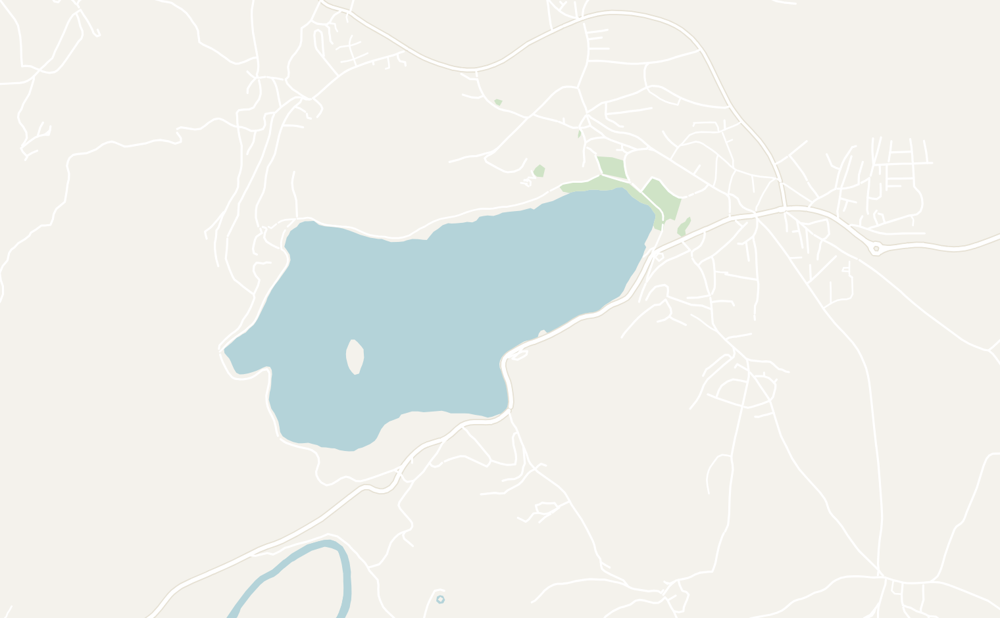
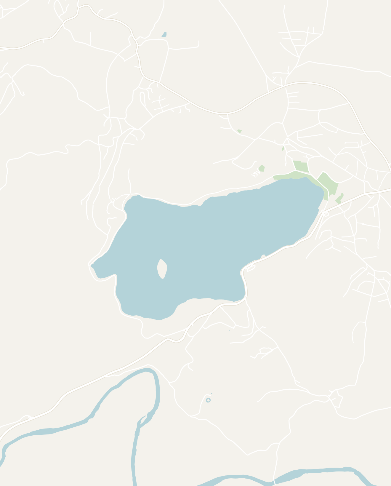
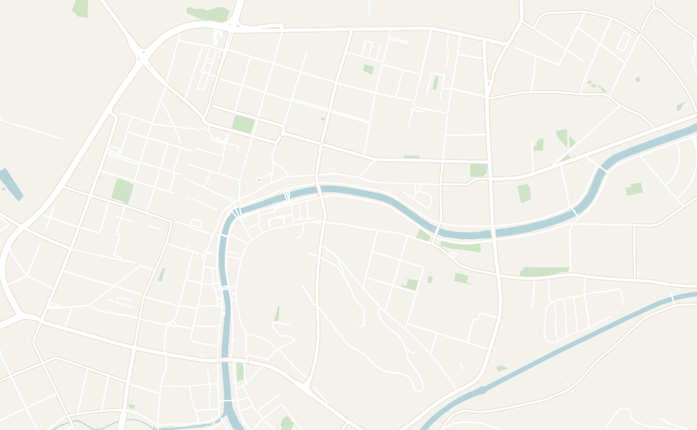
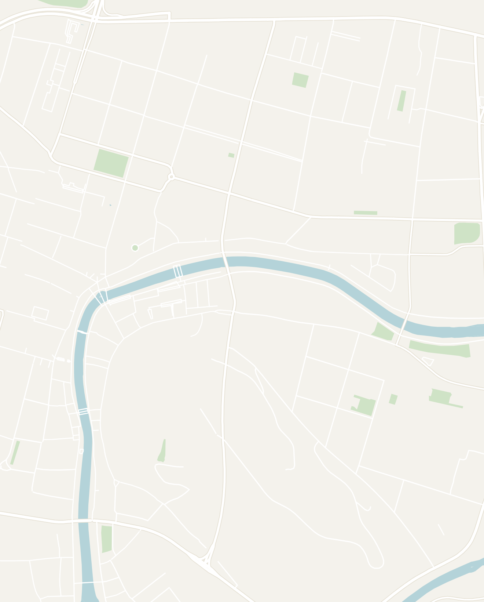

General
Slovenia is one of Europe's great little surprises: a tiny, green country wedged between the Alps and the Adriatic. Home to a storybook lake, a laid-back capital and dramatic mountains and caves, all within an hour or two of each other. Slovenia is an easy addition to a trip to Croatia, Italy or Austria trip. For first-time visitors, I would recommend spending about 4 to 5 days exploring the highlights of Lake Bled and Ljubljana.
- Getting around
- Buses & trains — Slovenia is a small country so everything is close. The two highlights of Bled and Ljubljana are less than an hour by bus or train. The rest of the country is extremely well connected by public transport so you won't need to rent a car unless you're exploring deep into the national parks
- Car — it is worth renting if you want to explore the alpine valleys, the coast and the caves at your own pace. You can fly into Ljubljana Airport and rent a car from one of the many agencies there
- Money — the Euro is the official currency there. Slovenia is good value and a tiny bit cheaper than neighboring Italy, Austria or Croatia
- Food — Slovenian food is a delicious crossroads between Germanic, Balkan and Italian food. Some of my favorite dishes were: hearty sausages and sauerkraut, cheap and excellent burek (a Balkan staple of filled filo pastry), štruklji dumplings, the famous Bled cream cake, and surprisingly good local wine & Laško lagers
- Language — the official language here is Slovenian (similar to other Southern Slavic languages spoken in the Balkans). English is very widely and confidently spoken so you'll have no trouble getting around or even striking up a conversation with locals
Lake Bled
2–3 days recommendedLake Bled is Slovenia's premier destination that you might recognize from photos: a crystal-clear turquoise alpine lake with a tiny, charming church perched on an island. The area also includes a medieval castle clinging to the cliffs above, and the Julian Alps rising in the background combine to create one of Europe's most picturesque landscapes.
The best way to experience Lake Bled is simple: walk the lakeshore, hike to one of the viewpoints, rent a traditional row boat or take a swim to the island. I would recommend at least 2 to 3 days to enjoy Lake Bled with some addition time just to relax.
- Walk around the Lake Bled — a flat, paved path loops the entire lake in about 90 easy minutes, passing swimming spots, cafés and constantly shifting views of the island. In the evening, the you for a stroll and watch the sun set over the picturesque lake. One of the loveliest free things to do in Slovenia
- Mala Osojnica Viewpoint — the best viewpoint for Lake Bled. The Mala Osojnica viewpoint is a short, but very steep hike up the wooded hill on the west side of the lake. Once you get to the top, you'll see the iconic bird's-eye view of Bled Island, the castle and the impossibly turquoise water far below. Go early for soft light and fewer people, and wear proper shoes, since it gets slippery when wet
- Some other viewpoints are Velika Osojnica and Ojstrica, but I felt like Mala Osojnica was the best view
- Bled Island — after admiring the little church and island from shore, the next thing to do is to make your way over there. The best way to get there is to rent a classic wooden rowboat from the shore and paddle your way there. You can also take a traditional pletna boat where a local guide rows for you or swim directly to the island (roughly 300m)
- On the island, you'll find 99 steps that will take you to the Church of the Assumption of the Blessed Virgin Mary. The church is pretty small and the whole island takes only 20 minutes to see, so the leisurely row out and back across the glassy water is really the experience
- Swim in the lake — fed by mountain springs and thermal sources, the water is so clean it's basically like swimming in drinking water. During the summer, it makes for the perfect place for a swim. You can pretty much swim anywhere along the lake with the grassy shore making it easy to just climb in. If you're looking for more formal swimming spots, you can head to the wooden docks near the village or Velika Zaka which was a beach popular among locals
- Bled Castle — the oldest castle in Slovenia, perched on a cliff right above the water and reached by a short uphill walk from the main town. Inside is a small museum, a working replica print shop and a wine cellar. There is an amazing view of the lake below along with the iconic church and island. It makes for a good alternative viewpoint if you don't want to do the climb up to the Mala Osojnica Viewpoint. There's a café terrace up top for a drink with the panoramic view
- Gostilna Pri Planincu — a traditional Slovenian restaurant near Lake Bled serving hearty local dishes at reasonable prices. The restaurant's setting feels like a classic Slovenian Inn with a cozy wooden dining room and a small outdoor dining tables. It's a great place to try regional specialties such as štruklji, žganci, and Slovenian sausages
- Kremšnita (cream cake) — Bled is famous all over Slovenia for their cream cake! A fat square of vanilla custard and whipped cream between sheets of flaky pastry. It was originally invented at the lakeside Hotel Park and now sold by every café in town. My favorite place to try it was Spica. It's worth trying once with a coffee and a lake view
- Pizzeria Rustika — one of the best meals I had in Lake Bled, serving excellent wood-fired pizzas and a good selection of Slovenian craft beers with generous portion sizes
- Mega Burger — a no-frills burger joints with lowkey one of the best burgers I had anywhere in Europe (coming from an American). It's a funny thing to rave about in a lakeside resort town, but after a day of hiking and swimming it absolutely hit the spot
- Stay in Bled Village on the eastern end of the lake. Most of the restaurants and accommodation options are located here. It's also walking distance from the rowboat docks, the lakeside path, the castle climb and the bus and train connections, making it the most convenient location in town
- Ace of Spades Hostel — a basic hostel besides the lake. I found the dorms to be regular, but the environment when I was there was extremely social. Everyone is in Bled to do the same thing so it is easy to find a group to join you


Double-tap to open in Google Maps
Ljubljana
2 days recommendedOne of Europe's most overlooked capitals, Ljubljana (pronounced loo-BLEE-ah-nuh) is definitely worth a visit. It is a charming, compact city of pastel Baroque facades, dragon-adorned bridges, and lively riverside cafés, all with a medieval hilltop castle towering over.
It's remarkably green, effortlessly walkable, and has a relaxed atmosphere that makes it easy to slow down and simply enjoy the city. Despite being a capital, Ljubljana feels intimate and isn't overcrowded with tourists. I would spend 2 days in Ljubljana.
- Ljubljana Castle — the hilltop fortress watching over old town Ljubljana. It is only a 10-minute walk up or it can be reached by a quick funicular. The included audio guide runs through the city's history, the viewing tower supposedly takes in a third of the country on a clear day, and there's a little museum of Slovenian puppetry tucked inside. It's a lovely spot for a coffee or a summer evening
- Old Town — a charming European old town based around the small Ljubljana river. You'll find lots of bridges and churches. You can take a walking tour if you're interested in history or simply wander around and get lost
- Prešeren Square — Ljubljana's lively main square and the heart of the city, named after Slovenia's greatest poet, France Prešeren. It is the best place to start and framed by colorful historic landmarks including:
- Franciscan Church — the first building to strike you will probably be the pink Franciscan Church. It is a striking salmon-pink Baroque church and one of Ljubljana's most recognizable landmarks
- Triple Bridge (Tromostovje) — the quirky three-in-one bridge at the heart of the old town, the signature work of architect Jože Plečnik, who shaped much of the city
- St. Nicholas Cathedral— Ljubljana's beautiful Baroque cathedral is worth visiting for its ornate interior, but don't miss the extraordinary bronze doors
- Dragon Bridge (Zmajski most) — the most photographed bridge in the city, an elegant bridge guarded at each corner by a fierce green-bronze dragon. The dragon is Ljubljana's emblem, tied to an ancient legend. You'll notice dragons everywhere throughout the city including the city flag, the manhole covers and half the souvenirs in town. The bridge is worth the short walk for the photo
- The Ljubljanica River cafés — the real pleasure of Ljubljana is simply sitting by the river and admiring how green the city is. There are many café and bar terraces, packed and buzzing on any warm evening. Grab a spritz or a local Union beer and watch the world drift by, or rent a kayak or paddleboard to see the willow-draped banks and bridges from the water
- Metelkova Art District — located a 15 minute walk from Prešeren Square, the Metelkova Art District is an anarchic autonomous arts complex. Every surface plastered in murals, mosaics and creepy sculptures. By day, it's a fun stop with colorful more modern art and a total contrast to the pretty old town. By night, it becomes one of the city's alternative nightlife hubs, grungy and fun, but a bit sketchy. There were some odd characters roaming around this area
- Loni-Pek Pekarstvo — I think I've recommended Burek in every single one of my Balkan travel guides. This spot in particular was recommended by my half-Slovenian friend who used to spend summers in Slovenia growing up. This local bakery was very affordable and located right by the river
- Klobasarna — a tiny, no-frills local counter dedicated to kranjska klobasa. It is a unique Slovenian dish with a sausage, served simply with mustard, horseradish and bread, alongside a warming bowl of jota (bean-and-sauerkraut soup). It's cheap, traditional and authentically Slovenian
- Stay in the old town along the river: Ljubljana is tiny and very walkable
- ibis Styles Ljubljana / The Fuzzy Log — one of the strangest hostels I stayed in... but not in a bad way. This ibis location offers either a rocket ship themed pod or an outdoor fuzzy log cabin, both of which seemed like they were designed by a 10 year old for a sleepover. I stayed in the rocket ship pod and it was very comfortable. Quite an interesting place to stay


Double-tap to open in Google Maps
Other Places to Consider
Slovenia packs a huge amount into such a small country. I didn't budget enough time on my first trip for the country. Here are some other highlights that I plan to visit on my next trip to Slovenia:
- Triglav National Park — Slovenia's greatest alpine national park, centered around the country's highest peak, Mount Triglav. The park is famous for hut-to-hut hiking through dramatic mountain scenery, where you can spend several days crossing valleys, pristine mountain streams, passes, and peaks while staying in traditional mountain huts
- Lake Bohinj — Bled's bigger, wilder and quieter neighbor. A long glacial lake deep in the Julian Alps inside Triglav National Park, ringed by peaks and forest that is much less developed than Lake Bled. It's the place to swim, kayak and hike, or ride the cable car up for the views. Pair it with the Vintgar Gorge, a spectacular boardwalk pinned to the cliffs above a rushing emerald river
- Piran — a gorgeous little Venetian-Gothic town packed onto a point at the tip of Slovenia's tiny 46km stretch of Adriatic coast. I resembles the seaside towns in Croatia with all terracotta roofs, a marble square and narrow lanes tumbling down to the sea
- Postojna Cave & Predjama Castle — one of the largest and most spectacular cave systems in Europe. It is big that you board an electric train that takes you couple of kilometers into the mountain before you walk among vast chambers of dripping formations. Pair it with nearby Predjama Castle, a dramatic Renaissance fortress built right into the mouth of a cliff cave. Both are easy stops between Ljubljana and the coast
- The Soča Valley — an achingly beautiful alpine valley following the electric-blue Soča river as it cuts through the Julian Alps, and Slovenia's outdoor-adventure heartland: whitewater rafting and kayaking, canyoning, hiking and via ferrata around the hubs of Bovec and Kobarid. Best explored with a car